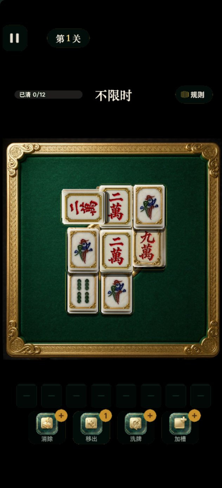
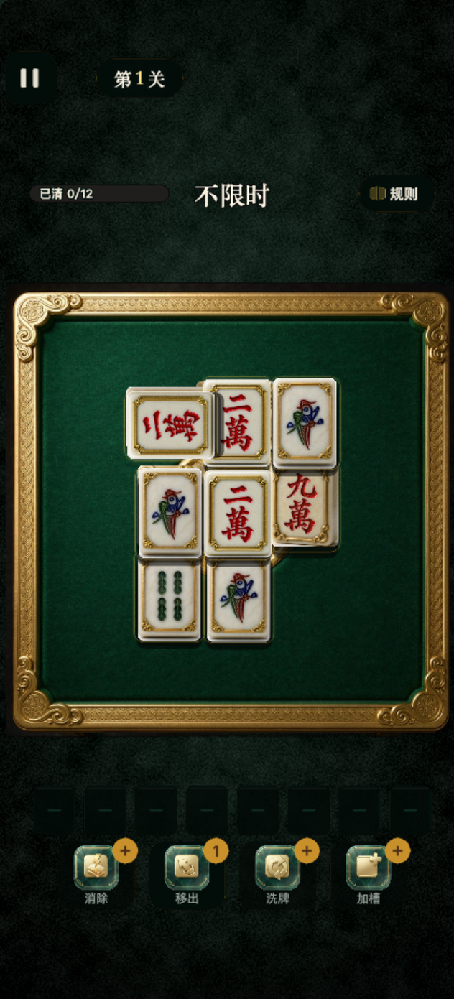
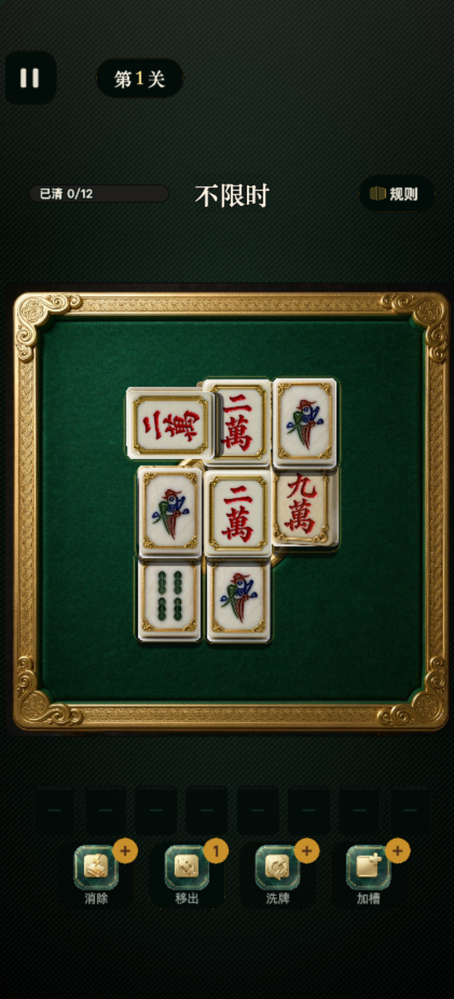
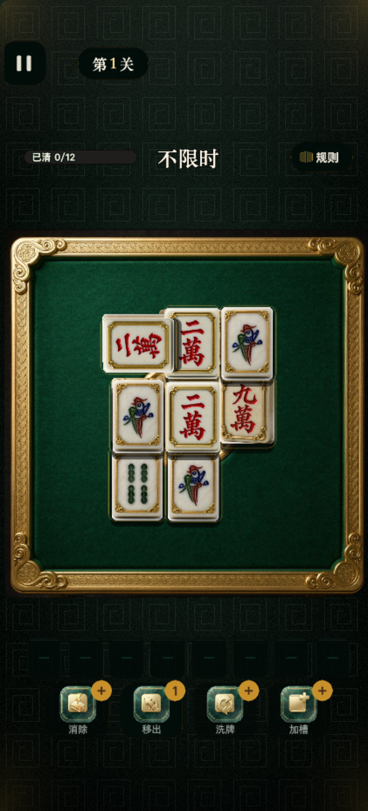
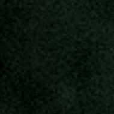
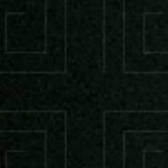

第 41 轮 · 主玩页「桌外底色」三款候选样底
取证口径 421×927 @3（真机 1264×2780）· 下表每个手机里的
桌子 / 牌堆 / HUD / 槽位 / 道具栏都是真机 3× 截图里抠出来的真像素，
只把底色换掉 —— 位置、尺寸、字号一个都没动。
一、为什么现在是「死黑」
- 渐变其实画了
- 全屏共 43.4% 的像素最大值恰好等于 0，其余台面外区域也全是 0 ——
也就是说桌外是纯 #000000，不是"很深的绿"。
- 病根
GamePage.buildEnv() 先建 Env 节点画径向渐变
（#0C110D → #070A07 → #030403），紧接着又建 EnvFx 节点
eg.fillColor = '#000000' 后 rect(-w, -h/2, 2w, h) 满铺。
两个节点是兄弟，EnvFx 后加入 ⇒ 渲染在 Env 之上，
把渐变整片盖住。后面那句 g.clear() 重画渐变也没用，它画的还是 Env。- 要改的就一层
- 只换
EnvFx 这一层。桌子、牌堆、HUD、槽位、道具栏零改动。
- 取景事实
- 桌子纵向占物理
788~2047、横向几乎顶满 ⇒ 真实可见的底色只有
「上带 ≈260 CSS px + 下带 ≈240 CSS px + 两条 <7 CSS px 的侧缝」。
所以渐变必须做成纵向大尺度（上亮下暗），
做成"中心亮四周暗"的话亮部会被桌子 100% 挡住。
二、三款候选 · 同机位对照
现状
纯 #000000 满铺

A · 墨玉凝霜
细颗粒磨砂 + 玉絮 + 玉绿柔光

B · 织锦经纬
45° 细斜纹织锦 + 顶部暖光

C · 回纹锦地
暗刻回纹锦地 + 四角金芒

三、纹理 1:1 放大 —— 判「细腻」
下面是底色本身的 1:1 裁片（物理 190×190 px，桌上缘左侧的空白带），
在板上放大约 2 倍。手机上"质感"就是靠这一层拿的，页面整图缩到手机尺寸时看不出来。
现状 · 无纹理
A · 4px + 1.6px 双频玉屑，
再叠 46px 低频玉絮

B · 16px 周期间距的
45° 斜纹织物（主脊 + 纬纱）
C · 156px 周期方形回旋
（2.5 圈，线宽 2.4px）

四、亮度对账（桌外空白带均值 / 255）
| 样底 | 上带
y300-500 |
中带
y590-770 |
下带
y2060-2170 |
底带
y2545-2770 |
侧缝
x0-70 | 全屏均值 |
|---|
| 现状 | 0.00 | 0.00 |
0.00 | 0.00 | 0.00 |
0.00 |
| A 墨玉凝霜 | 17.52 | 20.88 |
16.47 | 7.75 | 11.67 |
16.64 |
| B 织锦经纬 | 25.20 | 21.30 |
16.25 | 7.90 | 11.20 |
18.94 |
| C 回纹锦地 | 20.31 | 17.70 |
14.26 | 7.91 | 10.12 |
16.35 |
为什么不再亮一点。主玩页的 HUD 元件自身填充就很暗 —— 暂停胶囊实测填充
rgb(2,12,9)（亮度 8），槽位空框是深玉底（第 39 轮已记过它
"在近黑背景上对比度偏低"）。底色一旦抬到全屏均值 25 以上，这些暗元件就融进背景，
轮廓只剩一圈描边撑着。
⇒ 三款都刻意把 底带（道具栏那一段）压到 7.7~7.9，只让上带亮起来 ——
"质感"从纹样拿，不从提亮拿。后续要调明暗只需动一个系数，纹样不会被牵动。
五、三款规格
A
墨玉凝霜
无方向 · 像一块打磨过的墨玉背板
- 层叠
- 纵向大尺度径向渐变（上亮下暗）→ 4px+1.6px 双频颗粒 → 46px 低频玉絮 → 玉绿柔光
- 性格
- 最靠近现状色调，最不抢戏
- 生产件
- 128×128 颗粒 tile 17 KB
158×348 玉絮图 39 KB
- 风险
- 离"换了个底色"最近、离"有质感"最远，整图缩小后几乎只剩色相变化
B
织锦经纬
有方向 · 与桌面绿绒布同族
- 层叠
- 纵向径向渐变 → 16px 周期 45° 斜纹（主脊 0.74 + 纬纱 0.26，带二次谐波）→ 细噪 → 顶部暖光
- 性格
- 布感最强，三款里最亮
- 生产件
- 128×128 织纹 tile 8 KB
- 风险
- 上带 25.2 是三款最高；斜纹方向与桌面金框四角的斜向云纹略有"打架"
C
回纹锦地
有图形 · 呼应桌面金框的四角云纹
- 层叠
- 纵向径向渐变 → 156px 周期方形回旋暗刻（亮 +16/255）→ 石面颗粒 → 四角金芒
- 性格
- 三款里单位亮度最低（16.35）但纹样最明确
- 生产件
- 156×156 回纹 tile 0.8 KB
- 风险
- 满屏纹样在 HUD 背后略有存在感，觉得吵可以把 ink 系数砍半
六、我的建议
首选
C · 回纹锦地。三条理由：
① 它是唯一"有叙事"的一款 —— 回纹与桌面金框四角是同一族的纹样，
桌外暗刻 + 桌面錾刻，整体读起来是"一整套器具"，而不是"一台桌子摆在什么布上"。
② 它的质感来自纹样、不来自提亮：全屏均值 16.35 是三款最低，
底带 7.91 与 B 持平 —— 也就是说选它不会牺牲 HUD 与槽位的对比度。
③ 包体代价几乎为零：156×156 的平铺图只有 0.8 KB。
次选
B · 织锦经纬。布感最强、和桌面绿绒布最像"同一块料"。代价是最亮（上带 25.2），
以及斜纹方向与金框四角斜向云纹的小幅互相干扰。
保守
A · 墨玉凝霜。最安全、最不抢戏，但坦白说它是三款里最接近"就是把黑换成很深的绿"的一款 ——
纹理要 1:1 才看得见。
都可以调
三款各留两个旋钮：纹样强度与整体明度。真机上觉得"纹样再淡一点 / 底再压一点"，
改一个系数就行，不用重做。也可以叠（例如 C 的纹样 + A 的颗粒）。
七、实现口径（不占包体）
- 不能整页烘焙
- 这三张整页 PNG 分别是 3.5 / 3.2 / 3.4 MB。主包红线 4 MB、当前 2.99 MB ⇒
一张都塞不进，且三张加起来 10 MB。
- 正确做法
- 程序化渐变（Graphics，0 字节）+ 无缝平铺小图（TILED Sprite）。
渐变负责大尺度明暗，平铺图只负责纹样。三款分别是
17 KB + 39 KB / 8 KB /
0.8 KB ⇒ 主包增量约 9~56 KB，仍在 3.05 MB 以内。
- 待实现时验证
- Cocos 3.8 的
Sprite.Type.TILED 需要贴图 wrapMode = REPEAT；
引擎不一定自动设，要显式 texture.setWrapMode() 后再复核一次拼接缝。
（这是"实现时先自证再交付"的清单项，不是假设。）
八、待你拍板
- 选哪一款：A / B / C，或者要组合（如 C 纹样 + A 颗粒）。
- 明度档：再压 20% / 就用现在这个 / 再提 20%。
- C 的纹样尺度：保持 92.5 设计 px 一格，还是缩到约 60 设计 px 让它更细密。
- A 的低频玉絮：留着（更像"料"，但也更接近 B 的观感）还是去掉（更纯的雾面）。
拍板后我再动代码：改 buildEnv()、把平铺图入库、重建产物、
跑三套自检（tsc / g5-smoke / 真机审计），然后出真机试玩码。